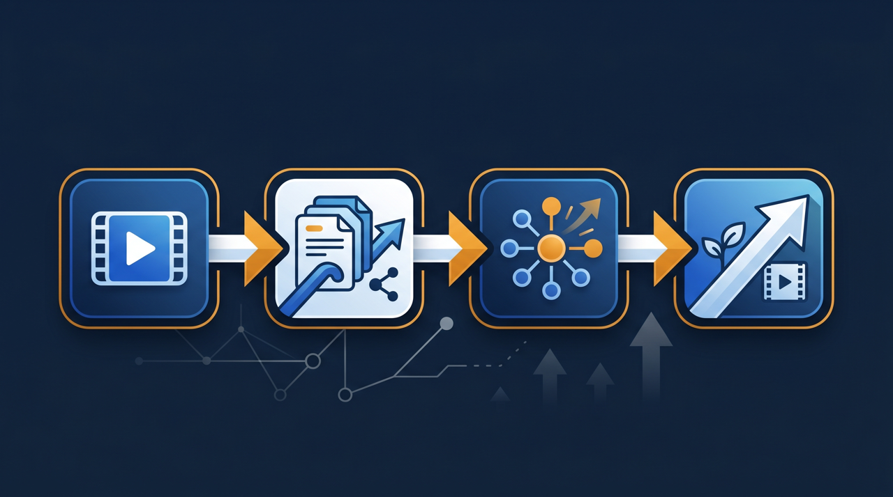
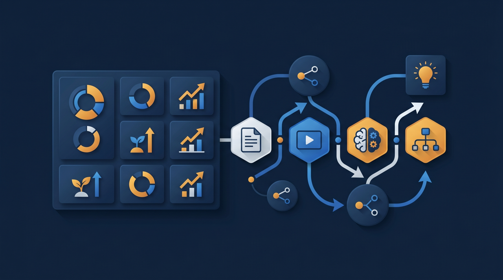

「毎年4月、同じ講師が同じ新人研修を、ほぼ同じ内容で繰り返している」「中途入社のたびに、また一から基礎を教え直している」——こうした繰り返しに、心当たりはありませんか。新入社員研修は、内容が毎年大きく変わらないからこそ、動画化の効果が出やすい領域です。この記事では、新人研修を動画化してオンボーディングを効率化する手順と、定着率を上げる設計のポイントを、現場目線で解説します。
新入社員研修の動画化とは？まず言葉を整理する
新入社員研修の動画化とは、毎年繰り返し行う新人向け研修の内容を、あらかじめ動画に収録しておき、新人が自分のタイミングで視聴して学べるようにすることを指します。会社概要、就業ルール、ビジネスマナー、基本的な業務知識など、毎年ほぼ同じことを教える内容ほど、動画にする効果が大きくなります。
ここでよく一緒に語られるのが、オンボーディングという言葉です。オンボーディングは、新しく入った社員が組織に馴染み、戦力として立ち上がるまでの受け入れ・育成のプロセス全体を指します。研修だけでなく、配属後のフォローや人間関係づくりまで含む、広い概念ですね。
つまり、動画研修はオンボーディングそのものではなく、その「土台部分を効率化する手段」だと位置づけると分かりやすいです。基礎知識のインプットを動画に任せることで、人にしかできないフォローに時間を回せるようになる、というわけです。
厚生労働省の能力開発基本調査でも、新規学卒者への教育訓練は多くの企業が実施している主要な育成活動として位置づけられています。その中で繰り返し行われる定型的な部分を動画化することは、無理のない効率化の第一歩になります。
なぜ新入社員研修は動画化に向いているのか
数ある研修の中でも、新入社員研修は特に動画化と相性がよい領域です。理由を整理してみましょう。
1. 毎年、内容がほとんど変わらない
新人研修で教える基礎部分——会社の歴史、組織図、就業規則、基本的なビジネスマナーなどは、毎年ほぼ同じです。同じ内容を毎年講師が一から話すのは、時間も労力もかかります。一度動画にしておけば、来年も再来年も使えるので、繰り返しのムダを減らせます。
2. 入社のタイミングがばらつくことがある
新卒の一括入社だけでなく、中途採用や通年採用が増えている会社では、入社のタイミングがばらばらです。その都度集合研修を開くのは現実的ではなく、結果として「入ったけれど、しばらく放置」という状態が生まれがちです。動画なら、入社したその日から各自のペースで基礎研修を始められます。
3. 新人が何度でも見返せる
新人にとって、初めて聞く情報は一度では覚えきれません。集合研修ではその場で巻き戻せませんが、動画なら、分からなかった部分を後からもう一度確認できます。自分のペースで学べるぶん、理解の取りこぼしが減るんですよね。
- 毎年ほぼ同じ内容を教えるため、一度作れば繰り返し使える
- 中途・通年採用でも、入社日からすぐに研修を始められる
- 新人が分からない部分を何度でも見返せる
- 講師が毎回同じ話をする負担から解放される
- 全員に同じ品質・同じ内容の基礎研修を届けられる
ある会社では、毎年4月に2日間かけて新人研修を行い、人事担当者がつきっきりで対応していました。けれど、その内容の大半が「毎年話している基礎の説明」だったといいます。この部分を動画にしたところ、担当者は当日の運営から解放され、新人は入社前から会社概要を予習できるようになった——こうした変化は、定型的な内容を動画に移したことで生まれた効果です。さらに、その会社では翌年から、前年の新人が「ここが分かりにくかった」と感じた部分を動画に追記していったといいます。動画は一度作って終わりではなく、新人の反応を見ながら年々良くなっていく。これも、繰り返し使う教材ならではの強みです。
逆に言えば、毎年内容が大きく変わる研修や、その年ごとの方針を反映する必要がある研修は、動画化に向きません。動画化を検討するときは、まず「これは毎年ほぼ同じことを話しているか」を見極めることが出発点になります。変わらない部分を動画に、変わる部分を対面に、という切り分けが現実的です。
新入社員研修を動画化する手順
では、実際にどう動画化を進めるか。一気に全部をやろうとすると挫折しやすいので、次の手順で段階的に進めるのがおすすめです。
ステップ1：研修内容を「動画向き」と「対面向き」に仕分ける
まず、いまの新人研修の内容を書き出し、動画に向く部分と、対面で行うべき部分に仕分けます。会社概要・就業ルール・基本マナーといった一方向の知識伝達は動画向き。グループワーク・先輩との面談・実際の業務体験など、双方向のやり取りや体験が必要な部分は対面向きです。この仕分けが、動画化の出発点になります。
ステップ2：動画向きの内容から収録する
仕分けたうち、動画向きの内容を収録します。最初から全部を作ろうとせず、一番繰り返している基礎部分から始めるのがコツです。きれいな編集は後回しで構いません。スライドに沿って説明する形でも、担当者が話す様子を撮る形でも、新人が理解できれば十分です。
ステップ3：1本を短く区切る
新人研修の動画は、1本を長くしすぎないことが大切です。長い動画は集中力が続かず、最後まで見てもらえないことがあります。テーマごとに10分前後に区切り、「会社の歴史」「就業ルール」「経費精算の流れ」のように、1本1テーマにすると、見やすく、後から探しやすくなります。
ステップ4：確認テストと面談をセットにする
動画を見せて終わり、にしないことが定着の分かれ目です。各動画のあとに簡単な確認テストを置き、理解できているかを測ります。さらに、動画では補えない疑問や不安を解消するため、先輩や上司との面談をセットにする。動画で知識、対面でフォローという組み合わせが、新人を孤立させない設計になります。

オンボーディングと定着率を高める設計のポイント
新入社員研修の動画化は、単なる効率化にとどまりません。設計を工夫すれば、新人の定着率を高める効果も期待できます。早期離職を防ぐ視点から、ポイントを整理します。
J-Net21などの中小企業向け情報でも、採用した人材の定着は重要な経営課題として取り上げられています。せっかく採用しても、入社後の受け入れがうまくいかず早期に辞めてしまっては、採用コストも教育の手間も水の泡になってしまいます。
ここで効いてくるのが、入社直後の不安をいかに減らすか、という視点です。新人が辞めたくなる理由の一つに、「放置されている」「成長している実感がない」という感覚があります。動画研修を、ただ知識を詰め込む道具としてではなく、新人に安心と見通しを与える仕組みとして設計すると、定着につながりやすくなります。
- 学ぶ順番と全体像を最初に示し、新人に見通しを持たせる
- 1本を短くし、見終えるたびに小さな達成感を得られるようにする
- 動画と面談を組み合わせ、孤立させない
- 確認テストで「できるようになった」を本人が実感できるようにする
- 入社前から一部を見られるようにし、初日の不安を和らげる
たとえば、入社前に「ようこそ」というメッセージ動画と会社概要だけを先に見られるようにしておくと、新人は初日を迎える前に会社の雰囲気をつかめます。初日の緊張が和らぎ、スムーズに馴染めるわけです。こうした小さな配慮の積み重ねが、定着率に効いてきます。
もう一つ、見落とされがちな点があります。それは、動画研修が「上司や先輩の負担」も軽くするということです。新人が入るたびに、配属先の先輩が基礎から教え直すのは、教える側にとっても大きな負担です。基礎を動画が担ってくれれば、先輩は応用や実践のフォローに集中できます。教える側のストレスが減ることは、受け入れる側の余裕につながり、結果として新人が相談しやすい雰囲気を生みます。動画化は、新人だけでなく、受け入れる職場全体を楽にする取り組みでもあるんですよね。
ところで、動画にすべてを任せて、人とのつながりを減らしてしまうのは避けたいところです。動画で生まれた時間を、先輩との面談や質問対応に回す。知識のインプットは動画に任せ、人にしかできない関わりに人の時間を使う——この役割分担こそが、動画化の本当の狙いだと言えます。新人が「分からないことを気軽に聞ける相手がいる」と感じられるかどうかは、動画では作れません。だからこそ、動画で時間を生み出し、その時間を人との関わりに回す設計が大切になります。
受講状況を管理し、研修を「仕組み」にする
動画を作って配るだけでは、「誰がどこまで見たか分からない」という新しい悩みが生まれます。特に入社時期がばらばらの場合、誰がどの研修を終えているのかを手作業で追うのは大変です。
ここで役立つのが、学習管理システム（LMS）です。動画と確認テストをLMSに置くと、新人ごとの受講状況や理解度が自動で記録されます。配属前に必要な研修を終えているかを一覧で確認でき、まだ見ていない人への案内も整理しやすくなります。

これにより、新入社員研修は「担当者が毎回手をかけるもの」から「仕組みで回るもの」へと変わります。受講状況が見えることには、もう一つ利点があります。それは、どの動画でつまずく新人が多いかが分かることです。確認テストの正答率が低い箇所が見えれば、その動画の説明が分かりにくい可能性に気づけます。新人の反応をデータとして受け取り、教材を改善していく——こうした振り返りの仕組みが、研修の品質を年々高めていきます。手作業の出欠管理では得られなかった気づきが、ここから生まれるわけです。
教えた内容が記録として残るので、人材開発支援助成金のように、研修の実施を証明する書類が求められる制度を活用する際にも整理がしやすくなります。記録が自動で残ることは、制度活用の場面だけでなく、社内で「きちんと教育を行っている」ことを示す根拠にもなります。
なお、新入社員研修の動画化やeラーニングの整備には、人材開発支援助成金のように、訓練にかかった経費や賃金の一部を国が助成する制度を活用できる場合があります。ただし、制度の対象や条件は変わることがあるため、活用を検討する際は、厚生労働省の公式情報や労働局の窓口で最新の要件を確認することをおすすめします。
まとめ：繰り返しを動画に、人の時間を人へ
新入社員研修は、毎年ほぼ同じ内容を繰り返すからこそ、動画化の効果が出やすい領域です。基礎知識のインプットを動画に任せれば、講師は毎回同じ話をする負担から解放され、新人は入社日から自分のペースで学べるようになります。
ただし、動画にすべてを任せるのではなく、知識は動画で、フォローは対面で、という役割分担が大切です。動画で生まれた時間を、先輩との面談や質問対応に回すことで、新人を孤立させず、定着率を高める設計になります。
進めるときは、いまの新人研修の内容を動画向きと対面向きに仕分け、繰り返している基礎部分から短い動画にしていく。そして、できた動画と確認テストを学習管理システムに集約し、受講状況を管理できる状態にする。この流れができると、新入社員研修は仕組みで回るようになり、人が入れ替わっても同じ品質の受け入れができるようになります。まずは、毎年同じことを教えている部分を1つ書き出すところから、動画化の検討を始めてみてください。
よくある質問
毎年繰り返し行う新入社員研修の内容を、あらかじめ動画に収録しておき、新人が自分のタイミングで視聴して学べるようにすることを指します。会社概要・就業ルール・基本的な業務知識など、毎年ほぼ同じ内容を教えるものほど、動画化に向いています。
新しく入った社員が、組織に馴染み、戦力として立ち上がるまでの受け入れ・育成のプロセス全体を指します。研修だけでなく、配属後のフォローや人間関係づくりも含む広い概念です。動画研修は、このオンボーディングの土台部分を効率化する手段の一つになります。
動画にすべてを任せると、その心配があります。知識のインプット部分を動画に移し、空いた時間を先輩との面談や質問対応、配属先での実践に充てる、という役割分担が効果的です。動画は対面のフォローを置き換えるのではなく、その時間を生み出すための手段と考えるとうまくいきます。
むしろ有効なことが多いです。中途や通年採用では、入社のタイミングがばらばらなため、その都度集合研修を開くのは現実的ではありません。動画にしておけば、入社したその日から各自のペースで基礎研修を始められ、立ち上がりの遅れを防ぎやすくなります。
学習管理システム（LMS）に動画と確認テストを置くと、誰がどこまで視聴したか、理解できているかが記録されます。未受講の新人への案内も整理しやすく、配属前に必要な研修を終えているかを確認できます。研修の実施を証明する記録としても活用できます。
要件を満たせば、人材開発支援助成金などの対象となる場合があります。ただし、対象となる訓練の種類や条件は変わることがあるため、活用を検討する際は、厚生労働省の公式情報や労働局の窓口で最新の要件を確認することをおすすめします。